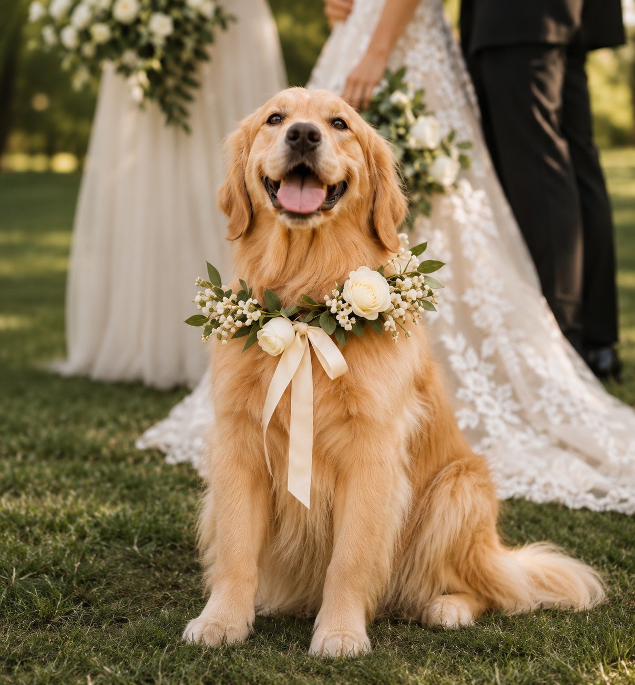

Wedding Day Attendant
Dedicated care, water, potty breaks, calming companionship, and handling throughout your celebration.
Professional, loving, and reliable pet care for your wedding day.
Inquire About Your Date →
I’m Karina, the founder of Wedding Pet Co., a lifelong animal lover and the proud owner of two dogs who mean the world to me.
With a background in pre-veterinary medicine, livestock, animal care, and behavior, I bring a well-rounded understanding of animal health, handling, and welfare to every wedding I’m a part of.
My diverse experience working with dogs, livestock, and a variety of animals has given me a deep appreciation for their unique personalities, needs, and the special bond they share with their people.
I know firsthand that our pets aren’t just pets — they’re family. That’s why I created Wedding Pet Co.: to give couples peace of mind knowing their beloved pets are safe, comfortable, and cared for while they enjoy every moment of their wedding day.
Dedicated care, water, potty breaks, calming companionship, and handling throughout your celebration.
Support with entrances, ring-bearer moments, photo coordination, and keeping your pet comfortable between special moments.
Coordinated transitions, pickup, and drop-off options to suit your event and your pet’s needs.

We look after your dog’s comfort and care while helping them participate in your ceremony, photos, and other special moments.
Yes! We can discuss their role based on their temperament, your plans, and your venue’s policies.
We’re based in Colorado. Tell us about your location in your inquiry so we can discuss possibilities.
Share your date, venue, and a little about your pet through the inquiry section.
We would love to hear about your wedding plans. Contact details are being finalized; check back soon to send your inquiry.
Back to the top ↑